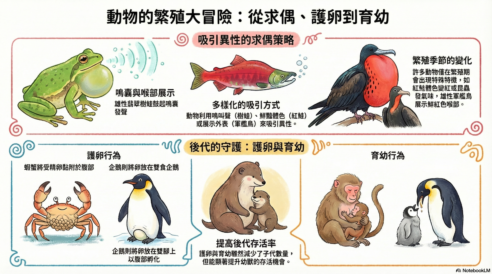

Q1. 下列哪一個最符合「求偶」的例子？
單選題提示：求偶是「吸引異性」的行為。
閱讀三段重點文本後，完成 4 題不同類型的互動練習；全部答對才會解鎖頁尾的「下一頁 →」。
有些動物會利用鳴叫聲、氣味、顏色或展示外表等方式來吸引同種類的異性，稱為求偶， 以達到繁殖產生後代的目的。例如在繁殖季節，有些昆蟲會散發特殊氣味，引誘異性交配； 有些魚類的體色會變得鮮豔；雄蛙會鼓起鳴囊發出叫聲，藉此吸引雌蛙（）；有些鳥類則會展示特別的外表來引起異性的注意。
行有性生殖的動物產生後代後，有些有護卵的行為，例如雌性蝦、蟹會將受精卵黏附在腹部以保護卵； 企鵝產卵後，會把卵放在雙腳上，用肚子覆蓋來孵卵。
有些動物則有育幼的行為，例如臺灣獼猴的母猴會用乳汁哺育小猴，直到小猴長大獨立； 小企鵝出生後，企鵝會用吐出的食糜來餵食小企鵝。護卵與育幼行為可以提高後代存活率。

每題回答完才會解鎖「檢查答案」。提交後會鎖定；答錯可重做。
提示：求偶是「吸引異性」的行為。
提示：護卵與「保護卵或孵卵」有關，和餵食幼體不同。
操作方式：先點選一張卡片（紫色外框），再點選要放入的分類區；若要退回，直接點分類區裡的卡片即可回到「待分類」。